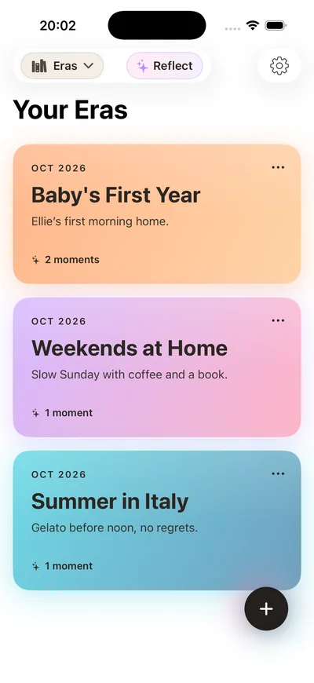
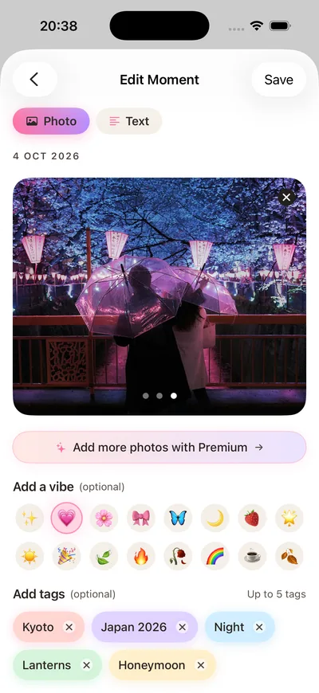
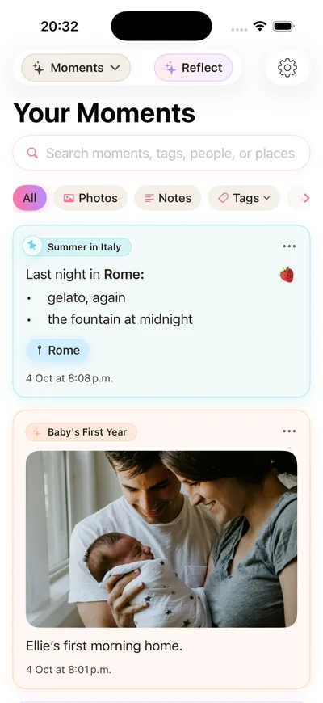
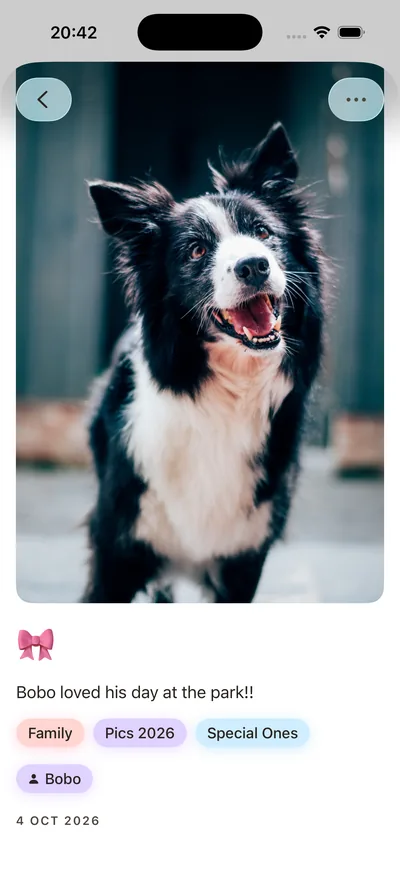
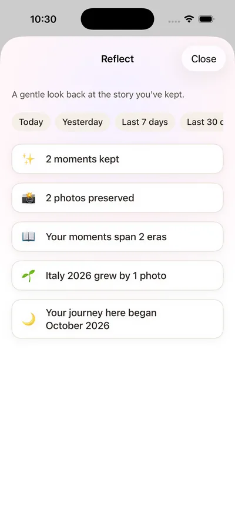

How Many Days Until Christmas?
63days until Christmas
Exact time until midnight on Christmas Eve, using the clock on your device.
Christmas Day 2026 is on Friday 25 December. That's 63 sleeps to go.
🎁 Hope you had a lovely Christmas! The countdown has started again for next year.
How many days until Christmas? Enough to start keeping this one.
Christmas is when most of us take more photos than at any other time of year, and when most of them get lost in the camera roll by January. Stillkeep is a private photo journal for iPhone. Give this Christmas its own chapter, called an Era, and keep each photo with the little story behind it.
An example Christmas Era ↓
The year Mochi climbed the tree.
✦ 3 momentsEras are chapters in Stillkeep. Start one for Christmas now, add to it all through December, and it's waiting for you next year.
✨ The tree's up! Nana's star went on last, like every year.
5 Dec at 7:42 p.m.🎀 Found the best seat in the house. Again.
8 Dec at 9:15 a.m.🌙 Walked under the light angels with hot chocolate. Freezing and perfect.
12 Dec at 6:30 p.m.How many days until Christmas? 10 moments worth keeping along the way
You don't need to photograph everything. Pick the moments you'll want to see again next year, and write a line about each one while it's fresh.
The day the tree goes up
Who put the star on, and the decoration with a story behind it.
The first Christmas lights in town
The walk, the cold, the hot chocolate afterwards.
Advent mornings
One small photo a day turns December into 24 little frames.
Baking and making
The recipe, the flour everywhere, and who got to lick the spoon.
Christmas cards that arrive
Photograph the handwriting and the messages before the cards come down.
Carols, concerts and the nativity
The costume made the night before and the song everyone remembers.
Christmas Eve traditions
The film, the new pyjamas, the plate left out by the fire.
Christmas morning
First reactions, the mountain of wrapping paper, the gift that made everyone laugh.
The dinner table
Write down who was there and what everyone was talking about.
The St Stephen's Day walk
Boxing Day air, the leftovers sandwich, the slow, happy day after.
How many days until Christmas? Time to set up your Christmas memories on iPhone
These are real Stillkeep screens. Your Christmas Era works exactly the same way.
- 1Start a Christmas EraCall it “Christmas 2026” and give it a line that sums up the season.

- 2Add Moments as they happenA photo, a few words, a vibe and up to five tags, like “Christmas Eve” or “Family”.

- 3Find any Christmas againSearch by words, tags, people or places, so “Nana” or “turkey” brings it straight back.

- 4Open the memory in fullThe photo with its caption, people, tags and date, all kept together.

- 5Look back with ReflectA gentle look back at what you kept, from today to the whole season. Reflect is part of Premium.

Stillkeep is free to start: up to 3 Eras, 20 Moments per Era and 3 photos per Moment. Premium adds more room and Reflect. No ads, and your journal syncs privately through your own iCloud.
How many days until Christmas? Your questions answered
How many days until Christmas 2026?
There are 63 days until Christmas. Christmas Day 2026 is on Friday 25 December. The countdown at the top of this page updates live, every second, using your own time zone.
How many sleeps until Christmas?
There are 63 sleeps until Christmas. Sleeps count the nights left before Christmas morning, so tonight is one of them and the number drops each time you wake up.
How many weeks until Christmas?
Christmas is 9 weeks away, with 9 weekends to go before Christmas Day.
How many days until Christmas Eve?
There are 62 days until Christmas Eve, which is on Thursday 24 December.
What day of the week is Christmas this year?
Christmas Day 2026 falls on a Friday. Christmas 2027 falls on a Saturday.
When does the Christmas countdown start again?
On 26 December. The page switches to next year's Christmas automatically, so the countdown is always right whenever you visit.
Does this countdown use my time zone?
Yes. It uses your device's clock, so the countdown reaches zero at midnight on Christmas Eve wherever you are, whether that's Dublin, New York or Sydney. The countdown runs entirely in your browser, so nothing about it is stored or sent anywhere.
How many days until Christmas? 63, and every one worth remembering.
Start your Christmas Era today. Keep the photos and the stories together, privately, on your iPhone.

No ads · Private iCloud sync · Made in Ireland
Christmas photographs from Unsplash. App screens from Stillkeep v4.